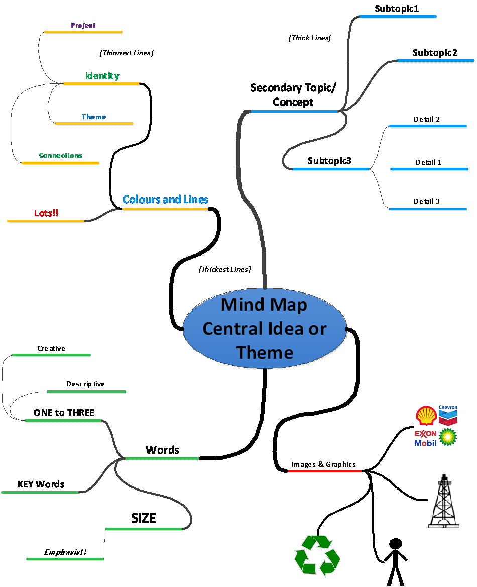

Each lesson plan is laid out as follows:
-
Overview
- A high-level description of the focus of the module.
-
Learning Outcomes
- The learning outcomes for the module.
-
Required Materials and Resources
- A list of materials and resources required to teach the module.
- Icebreaker and/or Quote of the Day.
- An optional warm up activity with participants. The intent is to start the daily lesson with an open discussion designed to stimulate thinking and create more open connections between students and with the instructor.
- Instructors may use the Ice Breakers provided or find another one they feel better conveys a point, is timelier or connects more directly with the day’s lessons. The idea is to ask lots of questions and encourage critical thinking by the students.
- Instructions when using Icebreakers and/or quotes.
- Read / Show the quote to the students.
- Ask students to write down the thoughts that come to mind when they see/hear the quote.
- Ask students to share their thoughts and discuss as a class.
-
Summary of the Sections and Learning Activities in the Module.
- Shows the major sections (including a brief description of their focus) and all of the learning activities in the module. Where necessary, instructions for the learning activities have been enhanced to clarify and help students fully participate in and/or complete the learning activities.
-
Suggested Reading.
- A list of the suggested readings included in the student modules. These are optional resources for students to obtain more information or learning on their own time. Not every module has suggested readings.
-
Notes.
- A place for the instructor to record observations or suggestions for improvement as they deliver each module. These notes will be helpful when completing the instructor program evaluation survey.
8.0 Index of Lesson Plans
Lesson Plan: Module 2.0 How to be Successful in this CourseLesson Plan: Module 2.1 Introduction to Natural Gas
Lesson Plan: Module 2.2 The Natural Gas Industry in British Columbia
Lesson Plan: Module 2.3 Upstream, Well Site Selection, Preparation and Drilling, Completion, Production, Water Recycling, and Reclamation
Lesson Plan: Module 2.4 Midstream, Processing, Transportation, and Markets
Lesson Plan: Module 2.5 Downstream, Refining and Markets
Lesson Plan: Module 2.6 Health and Wellness in the Natural Gas Industry
Lesson Plan: Module 2.7 Safety
Lesson Plan: Module 2.8 Terminology and Communication
Lesson Plan: Module 2.9 Jobs and Careers
Lesson Plan: Module 3.0 How to be a Valued Employee
Lesson Plan: Module 3.1 Identifying Interests and Skills
Lesson Plan: Module 3.2 Looking for Employment in Natural Gas
Lesson Plan: Module 3.3 Applying for Employment in Natural Gas
Lesson Plan: Module 2.0 How to be Successful in this Course
1. Overview
This module provides some basic tools that will help students feel more comfortable in the class, and to get ready to learn. The next several sections detail some key strategies that can assist new or returning students be more successful learners.
2. Learning Outcomes
When you complete this module, you will be able to:- Identify and describe your responsibilities as a learner.
- Identify and describe the responsibilities of your instructor.
- Describe how attendance and punctuality aid help you to be a successful learned.
- Demonstrate strategies for time and class project management.
- Describe ways that you can actively plan for and participate in your own learning.
3. Required Materials and Resources
- Projector with audio and projection screen.
- White board and white board pens / chalk board and chalk.
- Computers with internet connection; preferably one computer per student.
4. Ice Breaker
Insanity: Doing the same thing over and over and expecting different results.
Albert Einstein
5. Summary of Sections and Learning Activities in the Module
5. Summary of Sections and Learning Activities in the Module
5.1 Get Organized
Tips for students to organize themselves so they can participate in the program and not be overwhelmed.
5.1.1. Learning Activity 1 Get Organized
Instructions- Break the class into several small group and have them discuss each strategy to see how it can be used in the program.
- Ask each group to choose one person to take notes, and then share their ideas with the class.
5.2. Talk to Your Instructors
5.2.1. Your Learning Starts With YOU
This section speaks to the need for students to effectively communicate with the instructor if and when they don’t understand something or feel they are falling behind. It should be emphasized that this communication also needs to be done in a timely fashion – i.e. when a problem first arises – and not days or weeks later.
5.2.2. Tips for communicating with your instructor
A reminder for students that you as their instructor, are there to help them. Convey to them that they should view the instructor as an ally rather than an authority figure. The section then lays out some basic ground rules that will ensure there is effective and respectful communications between the students and the instructor, as well as between the students themselves.
5.2.3 Learning Activity 2 Talking to Your Instructor
You are going to take turns being the instructor and the student.
Instructions
- Ask the student to find a partner to work with.
- With their partner, ask them to practice asking questions that they may have about the course.
- Note, that the partner might not know the answer but can give you feedback on whether your question is clear, whether you have introduced yourself, etc.
5.3. Come to Class Prepared
Introduces the students to a broader, more inclusive interpretation of what being prepared means, and its importance in enhancing a student’s learning experience. Looks at both physical and mental preparation for learning.
5.3.1 Learning Activity 3 Superhero Pose
The following activity can help lower blood pressure, increases oxygen in the body, and helps a person feel relaxed and more confident. It takes only minutes but can make the difference in their day. Even if they are already running late and are stressed – suggest they take the extra two minutes in the hall to do this for themself. They will be more prepared to learn.
Instructions- Ask students to stand and find a space in the room where they are not distracted by others; ask them to face the wall.
- Have them stand with your feet, shoulder width apart, hands on their hips, elbows out wide.
- Ask them to lift their chin and drop their shoulders.
- Once in position, instruct them to breathe slowly but deeply for 10 breaths, in through the nose, out through the mouth.
If students are interested in learning more about how power posing can boost your confidence, suggest they check out this TEDTalk video (20 minutes, 48 seconds).
5.4. Understand Your Learning Style and Develop Your Skills
This section brings attention to the fact that people have quite different learning styles that are often, but not always, related to the culture they were raised in.
Bring to the students’ attention that some cultures adhere to very structured and formal styles of learning where students are not encouraged to speak up or question their teachers. Others learn through storytelling and sharing, while other learn by doing. These can also be intertwined with each other.
The students are then introduced o the three basic types of learning styles: auditory, visual, and tactile. Note that they may lean towards only one style or all three.
5.4.1 Auditory Learners
Provides a more detailed explanation of what an auditory learner is and provides some suggestions of things that auditory learners can do to learn better.
5.4.2. Visual Learners
Provides a more detailed explanation of what a visual learner is and provides some suggestions of things that visual learners can do to learn better.
5.4.3. Tactile Learners
Provides a more detailed explanation of what a tactile learner is and provides some suggestions of things that tactile learners can do to learn better.
5.4.4. Learning Activity 4 Learning Types
Instructions- Break the class into several small groups.
- Have the students talk with their classmates about what kind of learner they think they might be.
- Ask them to try to draw a diagram that shows how the different learning styles are present in your class.
- Once the students have identified their primary learning style (and perhaps a secondary one), organize the students in the room by their primary style, then their secondary style.
- Have each learning group show the differences and similarities.
5.5. Participate. Be on time. Be present.
5.5.1 Participate respectfully
This section describes different ways for students to participate in discussions. The intent is to raise awareness of the different ways and help students to help themselves and others participate in discussions.
5.6. Conclusion
This section connects the strategies and tips for successful participation in the program to application for success elsewhere, where it is looking for work or working in the natural das industry or any industry.
Highlight that there is no better time to start practicing being on-time, prepared, and present, than in this program.
6. Suggested Reading
- There is no suggested reading for this module.
7. Notes
Lesson Plan: Module 2.1 Introduction to Natural Gas
1. Overview
1.1. Welcome
Module 2.1 introduces the WiNG program, highlighting the broad range of employment and business opportunities, the industry offers British Columbians, and the importance of becoming energy literate in order to participate effectively and benefit from the industry’s growth in the future. The balance of the module describes natural gas and the history of its development as an energy source.
1.2. Energy Employment and Business Opportunities
A brief overview of the broad range of business opportunities and challenging, well-paying jobs and career paths natural gas and LNG energy sectors offer British Columbians.
This is one of the three main objectives of the WiNG Program. Highlights that jobs and careers can be both directly in the natural gas industry, or indirect – through employment working for firms or organizations that services, supplies, or regulates the natural gas industry. In addition, students should understand that there are also plenty of opportunities for entrepreneurs in business and commerce related to the production, transportation, and distribution of natural gas and LNG, and also in providing products and services to the people living in communities where natural gas is extracted, processed and shipped.
1.3. Energy Literacy
This is the second of the three main objectives of the WiNG Program. In addition to helping students better understand how to find work in the industry, the WiNG program will help them become more Energy Literate, by increasing their understanding of what natural gas is, how it is produced, and what type of economic contribution the industry makes to the province and the country.
1.4. Industry Community Literacy
This is third of the three main objectives of the WiNG Program. The intent is to enhance students’ appreciation that British Columbia is a diverse province and the natural gas industry works across, and in many regions and communities. The natural gas industry employs people from a wide range of places and backgrounds. It is important to understand how these different people and communities, including those on First Nations territories, in remote and urban locations, operate.
2. Learning Outcomes
When you complete this module, you will be able to:- Identify early uses of natural gas.
- Describe important events and figures in the history and development of oil and gas as an energy source in Canada and the United States.
- Explain how looking at the development and use of energy in the past can help shape future development and use of energy.
- Describe some of the people and places involved with the natural liquid gas industry today.
3. Required Materials and Resources
- Projector with audio and projection screen.
- White board and white board pens / chalk board and chalk.
- Computers with internet connection; preferably one computer per student.
4. Ice Breaker
We are like eggs at present. And you cannot indefinitely be just an ordinary decent egg. We must be hatched [and fly] or go bad.
CS Lewis
5. Summary of Sections and Learning Activities in the Module
5.1. Origins of Oil and Natural Gas
This section provides a brief overview of the early uses of petroleum products in early civilizations and societies around the world, including ancient and accomplished Indigenous civilizations of North, Central and South America.
5.2. The History of Oil and Gas
5.2.1. United States
The next five videos provide an overview of the history of the oil and gas industry. Explain that history of oil development the United States is connected to the industry history in Canada. As well, the history of the production of oil is connected to the history of natural gas.
- Video 1: History of Oil Part 1 (9 minutes 53 seconds).
- Video 2: History of Oil Part 2 (9 minutes, 53 minutes).
- Video 3: History of Oil Part 3 (9 minutes, 55 seconds).
- Video 4: History of Oil Part 4 (9 minutes, 58 sec) Note, watch up to minute 5.
- Video 5: History of Oil Part 5 (2 minutes, 51 seconds).
5.2.1.1. Learning Activity 1 Understanding the History of the Oil and Gas Industry
This learning activity involves watching video 1 with students and talking with them about important figures and events.
Instructions- Watch Video 1 with the students.
-
Stop a few times and ask students the following questions:
- Who is Abraham Gesner?
- What is sperm oil?
- What is kerosene?
- What is brine?
- Who is Edward Drake?
- Answer: An American businessman and the first American to successfully drill for oil.
5.2.1.2. Learning Activity 2 See How History Impacts Development of Industry
In this learning activity, students watch the above videos and then answer questions that prompt them to consider how the development of an industry can be shaped by looking at what has happened in the past.
Instructions- Watch videos 1 through 5; Watch video 4 up to the 5-minute mark. Note at the 5-minute mark, video 4 delves into the creation and expansion of private oil companies in the US, which while interesting, is not directly relevant to this course. Students wishing to watch the remaining part of this video can do so at the end of the class.
-
Have students answer the questions below.
- Why do we study history in general, and why do we study the oil and gas history in particular?
- Why do we study history in general, and why do we study the oil and gas history in particular?
- Give an example of what “one door closes another one opens” means in the oil industry.
- When was Standard Oil Trust dismantled; what are the spin-off companies?
- What can we understand about the oil and gas industry based on the people that are represented in the video? Who were the average people that were working? Where did they live? Answer: Standard Oil was broken up into 34 companies, among them those that became Exxon, Amoco, Mobil and Chevron. Ended a virtual monopoly and created competition between the new firms.
- Engage students in a class discussion using the discussion questions in the module as a starting point.
5.2.1.3.Learning Activity 3 Mind Map Important Events in Oil and Gas History This learning activity involves students creating a mind map to highlight important events in the recent history (post 1950) of oil and gas. A mind map graphic and tips for creating mind maps are included in the Student Module and are shown below for reference. Instructions
Instructions- Explain what a mind map is – a visual presentation of learning, e.g., students’ understanding of oil and gas history.
- Have students work in small groups or create the mind map as a class.
-
Ask students to identify what they see as the most important events,
for example:
- Logo for Shell, Phillips 66, TEXACO.
- OPEC.
- 1973 Embargo.
- Iraq War.
- Drawing of an important figure.
- Instruct students to put their events on paper (or the Board) using words or by drawing a symbol or picture.
- If the class is working in small groups, have a class discussion where each group shares their map.
Mind Map Example
